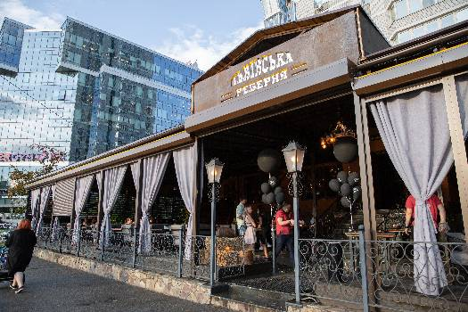
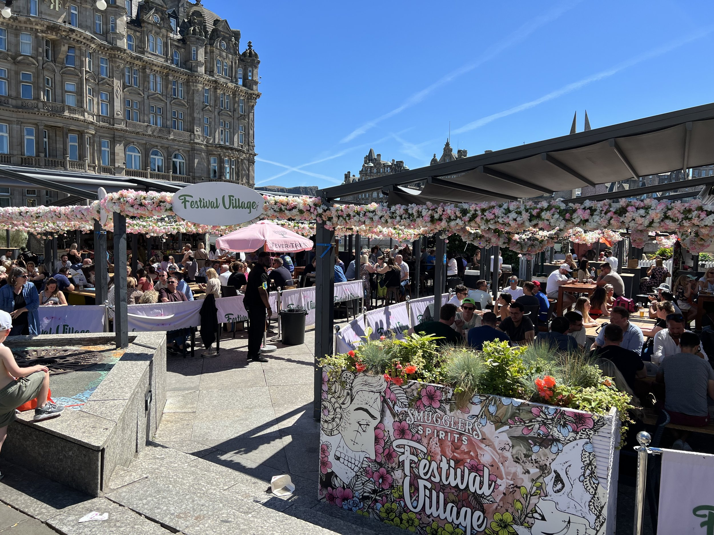
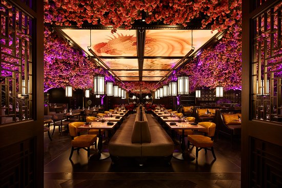

Jobs
Lviv Rebernya
Role: Food & Beverage Assistant

As a dedicated Food & Beverage Assistant at Lviv Rebernya in Kyiv, I was integral in ensuring that each guest's dining experience was exceptional. In this dynamic role, my responsibilities included assisting in the preparation and presentation of food, maintaining strict hygiene standards, and managing inventory to ensure all necessary supplies were readily available.
I played a key role in setting up for service, from arranging tables to decorating the dining area according to the day's theme or event requirements. I also provided direct customer service, warmly greeting guests, taking orders with accuracy, and addressing any dietary concerns or preferences, ensuring a personalized experience for each patron. My contributions were crucial in streamlining service operations and enhancing customer satisfaction through attentive service and a deep understanding of our menu offerings and the storied history of Lviv’s culinary traditions.
This role allowed me to develop strong teamwork skills, working collaboratively with kitchen staff and management to effectively meet service goals and respond to customer needs swiftly. My experience at Lviv Rebernya not only honed my skills in food service management but also deepened my appreciation for the culinary arts, reinforcing my passion for the hospitality industry.
Festival Village
Role: Waiter and Cashier

As a dedicated member of the Festival Village team in the vibrant city of Edinburgh, I thrived in a dual role that spanned both front-of-house and financial transactions. My primary responsibilities included providing exemplary service as a waiter, where I ensured that every guest felt welcomed and valued. I efficiently managed the seating, order-taking, and food delivery processes, all while maintaining a friendly and professional demeanor.
In my role as a cashier, I handled financial transactions with accuracy and speed, ensuring a seamless experience for customers during high-volume periods. My duties included processing payments, issuing receipts, and reconciling the cash drawer at the end of each shift, demonstrating my strong attention to detail and ability to manage financial responsibilities.
Working in the bustling environment of Festival Village, especially during the Edinburgh Festival, taught me to thrive under pressure and adapt to diverse customer needs. This experience has honed my interpersonal and multitasking skills, making me a versatile and reliable team player in any dynamic service-oriented setting.
Tattu
Role: Food Runner, Expo, Waiter and Bartender

During my tenure at Tattu, an esteemed contemporary Chinese cuisine restaurant in Edinburgh, I embraced a variety of roles that honed my versatility and understanding of the hospitality industry. My journey began as a Food Runner, where I was responsible for delivering dishes from the bustling kitchen to the patrons, ensuring that every plate arrived swiftly and precisely as intended by our chefs.
Advancing to the role of Expo, I took on the pivotal task of being the last point of quality control before food presentation. This position demanded a keen eye for detail and the ability to coordinate between kitchen staff and front-of-house operations, guaranteeing that every dish met Tattu's high standards and that order sequences flowed seamlessly.
As a Waiter, I directly interacted with our guests, offering them personalized service that aimed not just to meet but exceed their dining expectations. My responsibilities included explaining menu details, making tailored recommendations, and ensuring a memorable dining experience by attentively managing their culinary journey from start to finish.
Finally, as a Bartender, I crafted signature cocktails and managed a diverse beverage service, combining mixology skills with an intimate knowledge of wine and spirits. This role required precision and creativity to deliver both classic and innovative drinks that perfectly complemented Tattu’s unique dishes.
Throughout all these positions, my focus was on providing exemplary customer service, maintaining Tattu's sophisticated atmosphere, and contributing to our team’s continuous effort to redefine dining excellence.